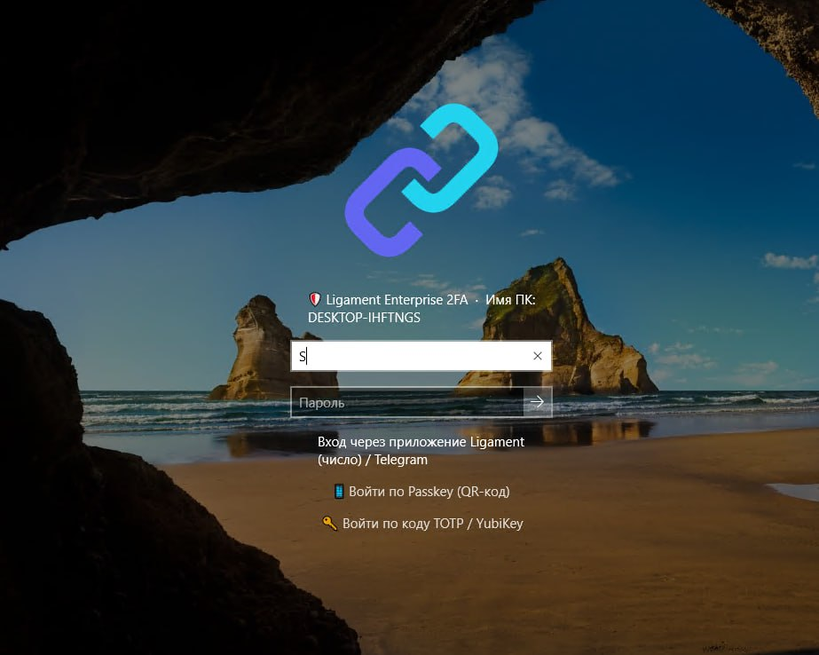
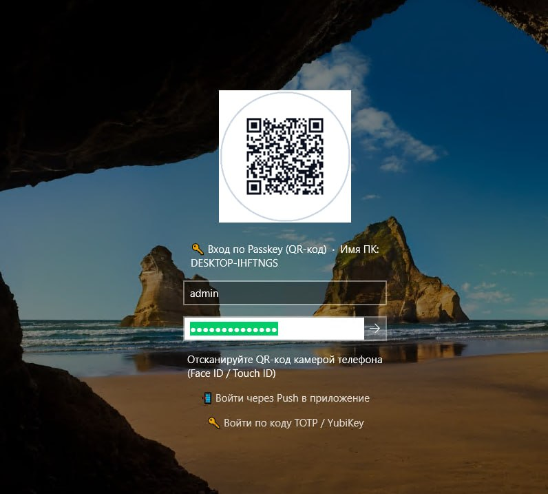

Windows
Клиент Ligament 2FA для Windows x64.
Скачать MSIЗащитите Windows Logon, RDP, RADIUS (VPN/Wi-Fi) и Web SSO в одном Docker-контейнере. Вход за 0.4 секунды в один клик — без ручного ввода 6 цифр из SMS и задержек.
Выберите сценарий: схема покажет его маршрут, второй фактор и поведение при обрыве связи.
Стрелка показывает направление запроса или установки соединения. Ответ идёт по тому же каналу. Факторы MFA — альтернативы, а не обязательная цепочка.
Прокручивайте схему по горизонтали или меняйте масштаб ↔
Внешний портал: HTTPS + 2FA. Приложение → Core: HTTPS / WSS. Relay → Core: отдельный исходящий WSS-туннель для филиала.
SSO и Windows Logon/UAC не идут через Relay. При полном обрыве WAN резервный Wi-Fi по кэшу продолжает работать локально; удалённый RDP/SSH-туннель к Core недоступен.
Сравните реальные риски зарубежных облаков, неудобство бесплатных TOTP-генераторов и надежность On-Premise Ligament.
Безопасность, которая устраивает офицеров ИБ, экономит бюджет руководству и не раздражает пользователей.
Полный суверенитет и защита от внешних блокировок. Соответствие 152-ФЗ, требованиям к КИИ и строгий аудит.
Сокращение совокупной стоимости владения (TCO) до 85% по сравнению с зарубежными облачными решениями.
Развертывание за 2 минуты без сложных кластеров. Готовые шаблоны GPO и тихая установка единым MSI.
Никаких скрытых облачных телеметрий, честная архитектура, исходный код без закладок и прямая поддержка от авторов.
Переключайтесь между ключевыми векторами защиты инфраструктуры компании.
Вход на рабочий стол без повторного клика и нажатия Enter сразу после подтверждения на телефоне.
На экране входа отображается проверочное число. Защищает от push-бомбинга и случайных нажатий.
Запрос второго фактора на телефон администратора при попытке запуска программ с правами администратора.
Сервер удерживает UDP-сессию на время подтверждения вторым фактором, предотвращая повторные запросы.
Бесшовный доступ к корпоративному Wi-Fi WPA2/WPA3-Enterprise с аутентификацией пользователей.
Совместимость с MikroTik RouterOS, Cisco ASA, Fortinet, UniFi, WireGuard и OpenVPN.
Централизованный IdP единого входа для корпоративных веб-сервисов (GitLab, Битрикс24, 1С, почта) работает строго через Core с бесшовным MFA.
Проброс RDP и SSH через Ligament Core или филиальный Relay до целевого хоста с подтверждением 2FA. Даёт защищённый удалённый доступ к рабочим станциям и серверам.
Защита любых legacy веб-панелей и внутренних систем без необходимости изменять их исходный код.
Relay устанавливает защищённый исходящий туннель WSS (:443) к Core, обеспечивая удалённый доступ к RDP (3389) и SSH (22) серверов филиала без белого IP и без открытия портов наружу.
При полном обрыве оптики и интернета локальный Relay выступает автономным RADIUS-сервером: корпоративный Wi-Fi (802.1X WPA2/WPA3 Enterprise) продолжает авторизовывать сотрудников по локальному кэшу.
Все события сетевых сессий Wi-Fi и сеансов проброса RDP/SSH буферизуются локально и автоматически передаются в центральный аудит при восстановлении связи.
Проектируем единый On-Premise шлюз присутствия Ligament Link, архив расследований Link Recorder с ИИ-аудитом, СКУД-турникеты с Anti-Passback и пожарную тревогу Болид по зонам присутствия с экстренным оповещением сотрудников.
Вход на рабочие станции Windows 10/11 и Server RDP: нативная плитка LogonUI, мгновенный Auto-Logon, подтверждение Passkey по QR-коду и корпоративный клиент.



Последний стабильный релиз v1.1.73 опубликован в GitHub Releases. Выберите свою платформу.
Клиент Ligament 2FA для Windows x64.
Скачать MSIНативный установщик для macOS.
Скачать DMGDEB, RPM и универсальный TAR.GZ для x86_64.
Выбрать пакетAPK с официальной подписью релиза.
Скачать APKПакет приложения для iOS из релиза.
Скачать IPABase — 100 ₽, Business с SSO — 250 ₽ за пользователя в месяц. Годовая оплата даёт 13 месяцев доступа. Бессрочная Base — 1 500 ₽ за пользователя разово.
Платные лицензии — минимум 20 пользователей. Для бесплатного Community выберите 5 пользователей.
Подписки Base и Business: минимум 20 пользователей; при оплате 12 месяцев — 13-й в подарок. Обновления включены на оплаченный срок. Business включает Trust, SSO, Bastion и базовую передачу событий в SIEM. Бессрочная Base и приобретённые отдельно модули включают 1 год обновлений; далее доступ к обновлениям продлевается по желанию за 20% их стоимости в год. Приобретённая версия продолжает работать без продления. Модули оплачиваются разово, Relay — за узел. Support и внедрение отдельно.
Бесплатная базовая защита для команды до 5 пользователей: второй фактор при входе Windows и повышении прав UAC, аутентификация VPN и Wi-Fi через RADIUS, базовые уведомления Notify.
Подписка на Windows Logon/UAC, RADIUS для VPN и Wi-Fi, уведомления Notify.
Base + SSO, Trust, Bastion и базовая передача событий в SIEM. Доступ RDP/SSH через Core или Relay до хоста с 2FA.
Базовая лицензия на каждого защищаемого пользователя: Windows Logon/UAC, RADIUS для VPN и Wi-Fi, уведомления Notify. Покупается один раз и позволяет пользоваться приобретённой версией бессрочно.
Базовые уведомления о событиях аутентификации: помогают узнавать о входах и отслеживать доступ пользователей. Включён в базовую лицензию без отдельной платы.
Филиальный узел для доступа к внутренним хостам: создаёт исходящий WSS-туннель к Core и передаёт RDP/SSH-подключения в филиал без белого IP. При обрыве WAN сохраняет локальную авторизацию Wi-Fi через резервный RADIUS по кэшу. Для каждого узла нужна отдельная лицензия.
Проверка состояния устройства при предоставлении доступа: BitLocker, Microsoft Defender и брандмауэр. Помогает учитывать защищённость рабочего места вместе с подтверждением личности пользователя.
Единый вход в корпоративные веб-приложения по OpenID Connect и SAML 2.0 с подтверждением MFA. Пользователь проходит аутентификацию через Ligament Core; филиальный Relay в Web SSO не участвует.
Проброс RDP и SSH через Ligament Core или филиальный Relay до целевого хоста с подтверждением 2FA. Даёт защищённый удалённый доступ к рабочим станциям и серверам.
Расширенная SIEM-интеграция по согласованному составу работ. Базовая передача событий включена в Business; отдельная лицензия Advanced не требуется для этой базовой функции.
Интеграция Ligament с системой контроля физического доступа (СКУД). Связывает проверку личности пользователя со сценариями доступа в помещения; совместимость с конкретной СКУД определяется при внедрении.
Услуга сопровождения: объём работ, время реакции и SLA по договору. Внедрение оценивается отдельно.
Обсудить сопровождениеНаглядное сопоставление возможностей ключевых подходов к корпоративной аутентификации.
Прокрутите таблицу вправо, чтобы увидеть все решения ↔
| Параметр | Cisco Duo / Okta | Google Auth / TOTP | Ligament 2FA |
|---|---|---|---|
| 100% On-Premise (без облака) | ✕ (Только SaaS-облако) | ✓ (Локально) | ✓ 100% On-Premise в Docker |
| Защита Windows Logon & UAC | ✓ (Сложная настройка) | ✕ (Нет интеграции) | ✓ Нативная плитка LogonUI |
| Авто-вход Auto-Logon (0.4 сек) | ✕ (Ручной клик и ввод) | ✕ (Ручной ввод 6 цифр) | ✓ Вход за 0.4с без клика |
| Филиальный Relay (RDP/SSH + Wi-Fi) | ✕ (Требует белых IP / падает без WAN) | ✕ (Нет связи) | ✓ Проброс RDP/SSH + Бэкап RADIUS Wi-Fi |
| Защита от push-бомбинга | Ограниченно | ✕ (Уязвим к фишингу) | ✓ Number Matching на экране |
| Корпоративные боты (Telegram/eXpress) | ✕ (Нет) | ✕ (Нет) | ✓ Вход без мобильного приложения |
| Стоимость за 100 пользователей | 720 000 ₽+ каждый год | 0 ₽ (без управления) | Business: 300 000 ₽ за 13 месяцев; бессрочная Base: 150 000 ₽ разово, модули отдельно |
От первого запуска Docker до полной защиты доменных компьютеров — менее 15 минут.
Запустите образ Ligament одной командой. База данных SQLite/PostgreSQL и веб-консоль управления уже внутри.
Укажите адрес вашего контроллера домена или FreeIPA. Пользователи и группы импортируются по LDAPS за 5 минут.
Создайте политику GPO с готовым ADMX-шаблоном. Нативная плитка входа установится на компьютеры автоматически.
Ответы на ключевые технические и финансовые вопросы об архитектуре Ligament.